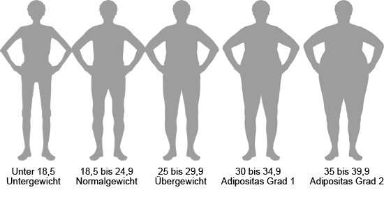

Der Body-Mass-Index (BMI)
Der Body-Mass-Index (BMI) wird benutzt, um den Körperfettanteil eines Menschen zu schätzen. Der BMI errechnet sich aus der Körpergröße im Verhältnis zum Körpergewicht:
Je nach BMI wird das Gewicht in verschiedene Kategorien eingeteilt:
BMI
Medizinischer Gewichtsstatus
unter 18,5
Untergewicht
18,5 bis 24,9
Normalgewicht
25 bis 29,9
Übergewicht
30 bis 34,9
Adipositas Grad 1
35 bis 39,9
Adipositas Grad 2
über 40
Adipositas Grad 3

BMI Kalkulator:
Berechne